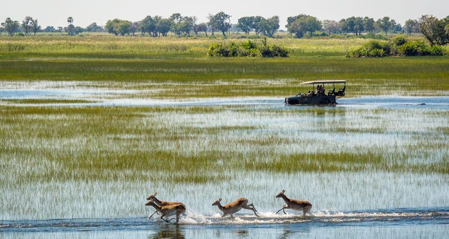
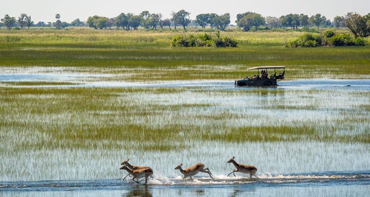

Yellowstone


Geographical Location: North America
Yellowstone is the first national park in the United States. It covers over 2.2 million acres, and provides an opportunity to see wildlife and explore geothermal areas. In fact, Yellowstone contains about half the world's active geysers.
These unique opportunities also bring out a lot of bad decisions among the tourists. Every year visitors injure themselves or the wildlife by getting close to the animals. You can see examples of people making bad decisions by visiting Yellowstone National Park: Invasion of the Idiots, Tourons of Yellowstone, or Cowboy State Daily.
Photo Gallery

Mammoth Hot Springs has a number of actively forming Travertine terraces.

The drive to Lamar Valley requires some dangerous roads. But the result is amazing sunset views.
The multicolored layers get their hues from different species of bacteria living in the cooler water around the spring.
The buffalo were so common along the roads in Yellowstone that our mantra became "If it ain't lickin the car, we aren't stopping."

If you can handle the odor, the Yellowstone Sulphur Springs is a great place to hike.
Shanghai, China

Geographical Location: Asia
Shanghai, a vibrant metropolis, is nestled along the eastern coast of China. With a population of over 26 million, it ranks as one of the world's most populous cities and serves as a global financial hub. The cityscape of Shanghai is an exquisite blend of history and modernity, where towering skyscrapers such as the iconic Oriental Pearl Tower and the Shanghai Tower punctuate the skyline alongside historical landmarks like the Bund, a waterfront promenade that showcases colonial-era architecture.
Te city has an unparalleled shoppign scene that caters to all tastes, from luxury brands in shiny malls to hidden gems in busy markets. Moreover, Shanghai's culinary landscape is a testament to its multiculturalism, offering a symphony of flavors that range from traditional street food like xiaolongbao (soup dumplings) to avant-garde dining experiences.
Photo Gallery
The Bund at night.
Enchanted Storybook Castle at Shanghai Disneyland.
Shanghai’s famous soup dumplings.
Hanging lanterns to celebrate Chinese New Year.
Shanghai Natural History Museum Building.
Dubai, United Arab Emirates


Geographical Location: Asia
Dubai is a growing attraction for many travelers. This city is located in the United Arab Emirates on the southeastern coast of the Persian Gulf. Dubai is renowned for its iconic architecture, luxurious lifestyle, and rapid development. Dubai is a global hub for tourism, innovation, and business
Dubai is a futuristic oasis in the middle of the desert. This city offers a unique blend of tradition and modernity. Towering skyscrapers offer a breathtaking skyline view. Dubai contains iconic buildings, malls, and islands that fuel its tourism
Photo Gallery

Reaching into the clouds, witness the tallest building in the world the Burj Khalifa.
Located just off the coastline, the Burj Al Arab boasts a unique design and world-class service

Nestled in the heart of downtown Dubai, the Dubai Mall offers a wide range of experiences from shopping, dining, and entertainment

An engineering marvel, the palm islands are shaped like a palm tree and provides an additional area for tourists

A snowy escape, Ski Dubai offers an indoor winter retreat from the harsh desert heat
Okavango Delta, Botswana
 

Geographical Location: Africa
Even though diamonds are Botswana’s largest export, its true jewel is the wildlife in it. All the big five game animals are present in the Okavango Delta. It also holds one of the world’s largest animal populations, including elephants, lions, cheetahs, and more
The Okavango Delta is in the middle of a desert, making it one of the few deltas that stand out from the other ~10000 deltas. Oil deposits were recently discovered in the rock in the Delta. This is a possible threat as extraction companies may pollute the water bodies, risking the lives of over 500 species of animals
Photo Gallery

Seeing hundreds of buffalo together is a common migration sighting in the Okavango Delta.

A herd of elephants walk through swampy ground of the Delta

A lioness with her three cubs covered in mud

A guide taking tourists through the river with both sides covered by lush grass in a canoe-shaped boat called a mokoro

Wild dogs, the most successful hunter of all wild animals, trekking through a river